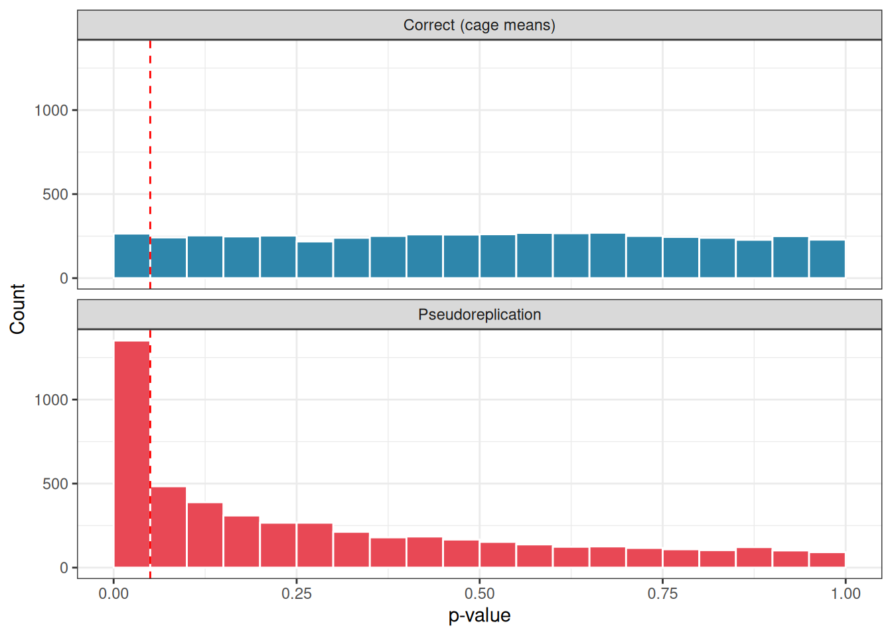
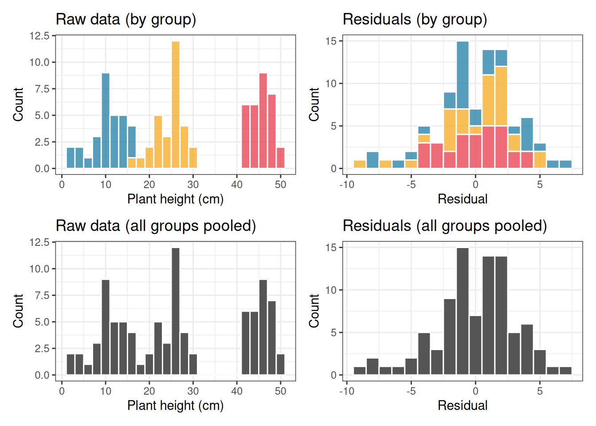
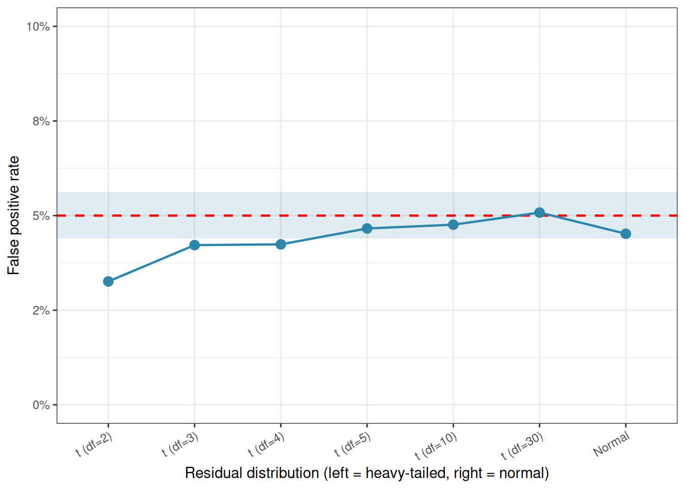
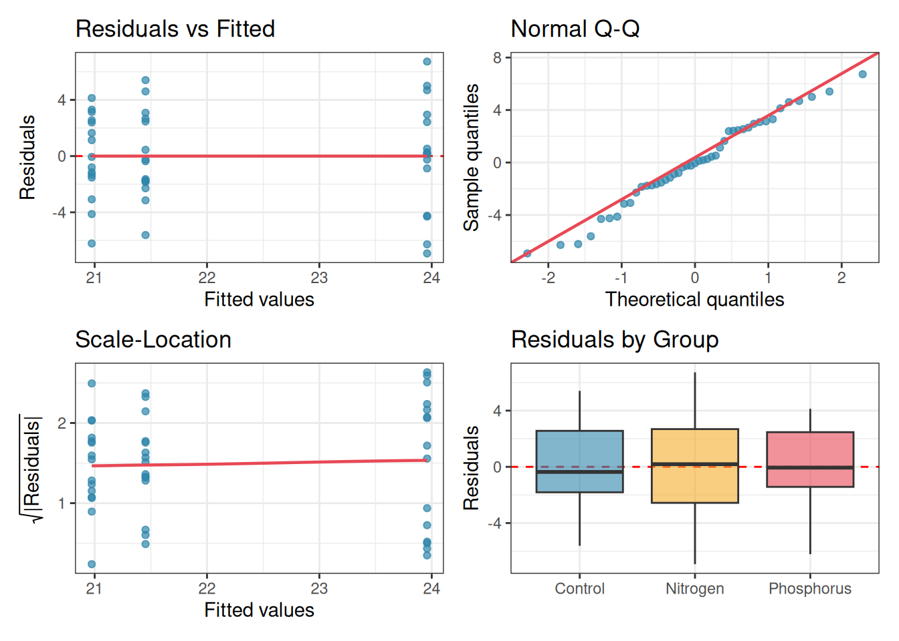
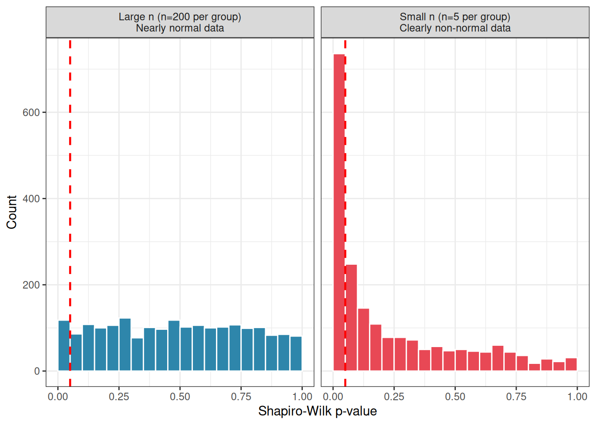
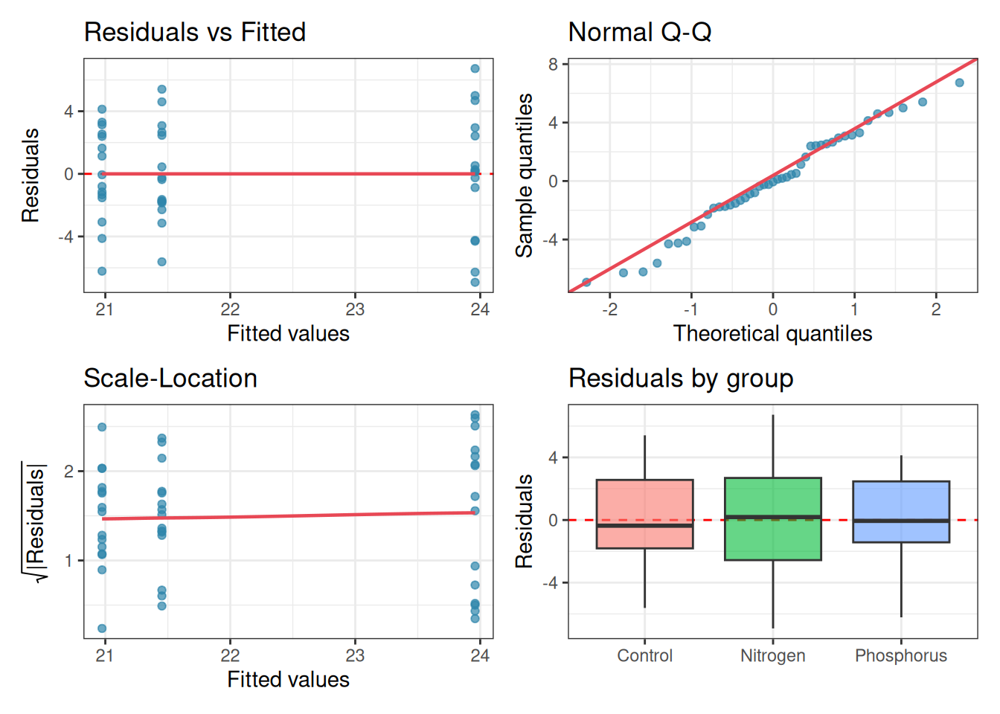

Of all the assumptions underlying ANOVA, independence is the most important and, paradoxically, the least discussed in introductory courses. The assumption states that knowing the value of one observation tells you nothing about the value of any other observation. Each data point must carry its own independent piece of information.
This sounds abstract, so let us ground it in a concrete example.
Imagine you are measuring the effect of three diets on the weight gain of mice. You have 12 mice, four per diet group. If each mouse lives in its own individual cage, eats its own food, and is weighed independently. Then the 12 measurements are independent: the weight of one mouse gives you no information about the weight of any other.
Now imagine instead that you house all four mice in each diet group together in a single shared cage. The mice in the same cage eat together, sleep together, and influence each other’s behaviour. A dominant mouse may monopolise food; a stressed mouse may eat less. The four measurements within each cage are no longer independent: they are clustered. Knowing that one mouse in a cage gained a lot of weight makes it more likely that its cagemates did too, simply because they share the same environment.
This is the essence of non-independence: observations that are grouped, nested, repeated, or spatially clustered tend to resemble each other more than random chance would predict.
2.1.2 Why does it matter so much?
ANOVA and the \(F\) test in particular, is built on the assumption that the within-group variance faithfully estimates background noise. When observations are not independent, this estimate is distorted. Specifically, clustered observations tend to be more similar to each other than truly independent observations would be, which artificially deflates the within-group variance. A smaller denominator in the \(F\) ratio means a larger \(F\) statistic, and therefore a smaller \(p\)-value, even when there is no real treatment effect. In other words, non-independence makes you think you have found something when you have not.
This inflation of the false positive rate is not a minor inconvenience. It can be dramatic, as the simulation below will demonstrate.
2.1.3 A concrete example: pseudoreplication
The most common form of non-independence in biology is pseudoreplication: the mistake of treating non-independent measurements as if they were independent replicates (Hurlbert 1984).
Returning to our mice: suppose you have three diet groups, each with two cages, and two mice per cage, 12 mice in total. The true replicates are the cages (since each cage is an independent experimental unit), not the individual mice. If you ignore the cage structure and run ANOVA on the 12 individual mouse weights as if they were 12 independent observations, you are pseudoreplicating. Your apparent \(n = 12\) is an illusion, you effectively have only \(n = 6\) independent units.
The following R code simulates this scenario.
Code
set.seed(42)n_sim<-5000# number of simulationsalpha<-0.05# significance thresholdn_diets<-3# number of diet groupsn_cages<-2# cages per diet groupn_mice<-2# mice per cagecage_sd<-2# variation among cages (shared environment effect)mouse_sd<-1# variation among mice within a cagefalse_pos_correct<-logical(n_sim)false_pos_pseudo<-logical(n_sim)for(iinseq_len(n_sim)){# Build the data structurediet<-rep(paste0("Diet", 1:n_diets), each =n_cages*n_mice)cage<-rep(paste0("Cage", 1:(n_diets*n_cages)), each =n_mice)# Cage-level random effect (shared environment, no diet effect)cage_effect<-rep(rnorm(n_diets*n_cages, mean =0, sd =cage_sd), each =n_mice)# Individual mouse noisemouse_noise<-rnorm(n_diets*n_cages*n_mice, mean =0, sd =mouse_sd)# Response: no diet effect, only cage effect + individual noiseweight_gain<-10+cage_effect+mouse_noisedf<-data.frame(diet, cage, weight_gain)# --- Correct analysis: use cage means ---cage_means<-aggregate(weight_gain~diet+cage, data =df, FUN =mean)fit_correct<-aov(weight_gain~diet, data =cage_means)p_correct<-summary(fit_correct)[[1]][["Pr(>F)"]][1]false_pos_correct[i]<-p_correct<alpha# --- Incorrect analysis: ignore cage structure (pseudoreplication) ---fit_pseudo<-aov(weight_gain~diet, data =df)p_pseudo<-summary(fit_pseudo)[[1]][["Pr(>F)"]][1]false_pos_pseudo[i]<-p_pseudo<alpha}
Running this code produces output along the lines of:
The correct analysis produces a false positive rate right at the nominal 5% level: exactly as it should when there is no real effect. The pseudoreplicated analysis produces a false positive rate of around 27 %: more than one in four experiments would be declared significant by chance alone, simply because the cage structure was ignored.
We can visualise the distribution of \(p\)-values from both approaches across the 5000 simulations.
First we simulate the distributions.
Code
set.seed(42)n_sim<-5000alpha<-0.05n_diets<-3n_cages<-2n_mice<-2cage_sd<-2mouse_sd<-1p_correct<-numeric(n_sim)p_pseudo<-numeric(n_sim)for(iinseq_len(n_sim)){diet<-rep(paste0("Diet", 1:n_diets), each =n_cages*n_mice)cage<-rep(paste0("Cage", 1:(n_diets*n_cages)), each =n_mice)cage_effect<-rep(rnorm(n_diets*n_cages, mean =0, sd =cage_sd), each =n_mice)mouse_noise<-rnorm(n_diets*n_cages*n_mice, mean =0, sd =mouse_sd)weight_gain<-10+cage_effect+mouse_noisedf<-data.frame(diet, cage, weight_gain)# Correct analysis: cage means as the unit of analysiscage_means<-aggregate(weight_gain~diet+cage, data =df, FUN =mean)p_correct[i]<-summary(aov(weight_gain~diet, data =cage_means))[[1]][["Pr(>F)"]][1]# Incorrect analysis: pseudoreplicationp_pseudo[i]<-summary(aov(weight_gain~diet, data =df))[[1]][["Pr(>F)"]][1]}
library(ggplot2)# Build a tidy data frame for plottingp_df<-data.frame( p_value =c(p_correct, p_pseudo), analysis =rep(c("Correct (cage means)", "Pseudoreplication"), each =n_sim))ggplot(p_df, aes(x =p_value, fill =analysis))+geom_histogram(binwidth =0.05, boundary =0, colour ="white")+facet_wrap(~analysis, ncol =1)+geom_vline(xintercept =0.05, linetype ="dashed", colour ="red")+scale_fill_manual(values =c("#2E86AB", "#E84855"))+labs(x ="p-value", y ="Count", fill ="Analysis type")+theme_bw()+theme(legend.position ="none")

Figure 2.1: Distribution of p-values under the null hypothesis across 5000 simulations. Under the correct analysis (top), p-values are uniformly spread between 0 and 1, the expected behaviour of a well-calibrated test. Under pseudoreplication (bottom), p-values pile up near zero, producing a large excess of spurious significant results. Red dashed line marks p = 0.05.
Under the correct analysis, \(p\)-values are uniformly distributed between 0 and 1, the signature of a well-calibrated test under the null hypothesis. Under pseudoreplication, \(p\)-values pile up near zero, producing an excess of spurious significant results.
2.1.4 How to detect non-independence
Independence is not something you can test statistically after the fact: it must be assessed by thinking carefully about how the data were collected. Ask yourself: - Are any observations collected from the same individual at different times? - Are any observations grouped within a shared physical unit (a cage, a pot, a plot, a classroom, a hospital ward)? - Could observations close together in space or time be more similar to each other than observations far apart?
If the answer to any of these questions is yes, your observations are likely not fully independent, and a standard ANOVA may not be appropriate.
2.1.5 What to do when independence is violated
The good news is that non-independence is not a dead end: it is a feature of your data that can be modelled explicitly. The appropriate tools depend on the structure of the dependence:
Repeated measures ANOVA handles the case where the same individual is measured multiple times.
Mixed-effects models (also called multilevel or hierarchical models) handle nested structures such as mice within cages, students within classrooms, or plots within fields. These models estimate the cage-level (or cluster-level) variance explicitly rather than pretending it does not exist.
In all cases, the key principle is the same: the unit of replication in your statistical analysis must match the unit of replication in your experimental design. If the cage is the experimental unit, the thing that received the treatment, then the cage, not the individual mouse, must be the unit of analysis.
2.2 Homogeneity of Variances (Homoscedasticity)
2.2.1 What does the assumption say?
ANOVA assumes that the variance of the residuals, the scatter of individual observations around their group mean, is the same in every group. This property is called homoscedasticity, from the Greek for “same scatter”. Its opposite, heteroscedasticity, refers to situations where different groups have different amounts of internal variation. Concretely, in our fertiliser experiment, homoscedasticity means that the spread of plant heights around the control mean, the spread around the nitrogen mean, and the spread around the phosphorus mean should all be approximately equal. The groups may differ in their means, that is what we are testing, but they should not differ in their variances.
2.2.2 Why does ANOVA need this?
Recall that the \(F\) ratio is built on two variance estimates:
The within-group variance is computed by pooling the scatter from all groups together into a single estimate of background noise. This pooling is only legitimate if the groups genuinely share the same underlying variance. If one group is much more variable than the others, the pooled estimate will be distorted, either inflated or deflated depending on group sizes, and the \(F\) ratio will no longer behave as it should under the null hypothesis.
2.2.3 A concrete example
Imagine you are studying the effect of three different training programmes on the resting heart rate of patients recovering from surgery. The control group follows no structured programme. A moderate exercise group follows a gentle walking routine. An intensive exercise group follows a vigorous rehabilitation protocol.
It is biologically plausible that the intensive group shows much greater variability than the others: some patients respond remarkably well to intense exercise and drop their heart rate considerably, while others find it too demanding and show little improvement or even adverse responses. The control group, doing nothing structured, might cluster more tightly around a common elevated heart rate. The three groups could therefore differ not only in their means but in their spread, a classic heteroscedastic situation.
2.2.4 Simulating the consequences
The code below simulates a situation where there is no true effect of treatment, all three groups have the same mean, but the groups differ substantially in their variance.
Code
set.seed(123)n_sim<-5000alpha<-0.05n<-10# observations per group# True group means, identical, so any significant result is a false positivemu<-c(70, 70, 70)# Group standard deviations, deliberately unequalsigma<-c(2, 5, 15)p_standard<-numeric(n_sim)p_welch<-numeric(n_sim)for(iinseq_len(n_sim)){y<-c(rnorm(n, mean =mu[1], sd =sigma[1]),rnorm(n, mean =mu[2], sd =sigma[2]),rnorm(n, mean =mu[3], sd =sigma[3]))group<-factor(rep(c("Control", "Moderate", "Intensive"), each =n))df<-data.frame(y, group)# Standard ANOVA (assumes equal variances)p_standard[i]<-summary(aov(y~group, data =df))[[1]][["Pr(>F)"]][1]# Welch's ANOVA (does not assume equal variances)p_welch[i]<-oneway.test(y~group, data =df, var.equal =FALSE)$p.value}
We then compare the false positive rate of standard ANOVA (which assumes equal variances) against Welch’s ANOVA (which does not).
Standard ANOVA rejects the null hypothesis in roughly 8`% of simulations, more than the nominal 5% rate, even though no true difference exists. Welch’s ANOVA stays right at the 5% level, as it should.
2.2.5 Visualising the problem
It is always good practice to look at your data before running any test. A simple plot of the raw observations by group immediately reveals heteroscedasticity that summary statistics alone might obscure.
library(ggplot2)set.seed(123)# Generate one representative dataset for plottingy<-c(rnorm(n, mean =mu[1], sd =sigma[1]), # controlrnorm(n, mean =mu[2], sd =sigma[2]), # moderaternorm(n, mean =mu[3], sd =sigma[3])# intensive)group<-factor(rep(c("Control", "Moderate", "Intensive"), each =n), levels =c("Control", "Moderate", "Intensive"))df_plot<-data.frame(y, group)ggplot(df_plot, aes(x =group, y =y, fill =group))+geom_boxplot(alpha =0.4, outlier.shape =NA)+geom_jitter(width =0.1, size =2, alpha =0.7)+scale_fill_manual(values =c("#2E86AB", "#F6AE2D", "#E84855"))+labs(x ="Training programme", y ="Resting heart rate (bpm)")+theme_bw()+theme(legend.position ="none")
Figure 2.2: Simulated heart rate data from one realisation of the three-group experiment. The groups share the same true mean but differ dramatically in their spread. This pattern, wider scatter in one group than another, is the signature of heteroscedasticity.
Notice how the control group clusters tightly while the intensive group spreads widely up and down. This is exactly the pattern that violates the homoscedasticity assumption and distorts the standard \(F\) test.
2.2.6 How to check the assumption
There are two complementary approaches, and you should use both.
Graphically: always the first step. A boxplot or a plot of residuals against fitted values will reveal unequal spread across groups far more intuitively than any test statistic. If the boxes in your boxplot differ dramatically in height, or if the residual spread fans out as fitted values increase, heteroscedasticity is likely.
Formally: the most commonly used test is Levene’s test, which tests the null hypothesis that all group variances are equal. In R:
# install.packages("car") if not already installedlibrary(car)
#> Levene's Test for Homogeneity of Variance (center = median)
#> Df F value Pr(>F)
#> group 2 6.7529 0.004187 **
#> 27
#> ---
#> Signif. codes: 0 '***' 0.001 '**' 0.01 '*' 0.05 '.' 0.1 ' ' 1
A significant result (\(p < 0.05\)) suggests that the variances are not equal and that standard ANOVA should be used with caution. Note however that Levene’s test, like all formal tests of assumptions, is sensitive to sample size: with very large samples it will flag trivially small differences in variance as significant, while with very small samples it may miss substantial heteroscedasticity. The graphical check should always come first.
2.2.7 What to do when the assumption is violated
Fortunately, several straightforward options are available.
Welch’s ANOVA is the simplest and most recommended solution for the one-way case. It relaxes the equal-variance assumption by adjusting the degrees of freedom of the \(F\) test, and it performs well even when variances are equal: making it a sensible default in many situations. In R it is a single argument change:
# Standard ANOVAsummary(aov(y~group, data =df_plot))
#> Df Sum Sq Mean Sq F value Pr(>F)
#> group 2 327.4 163.68 2.177 0.133
#> Residuals 27 2029.7 75.17
# Welch's ANOVA, preferred when variances may differoneway.test(y~group, data =df_plot, var.equal =FALSE)
#>
#> One-way analysis of means (not assuming equal variances)
#>
#> data: y and group
#> F = 1.18, num df = 2.000, denom df = 13.596, p-value = 0.3369
Variance-stabilising transformations are worth considering when heteroscedasticity has a systematic pattern. If variability tends to increase with the mean, a common situation with count data or strictly positive measurements, a log transformation often brings the variances into approximate equality:
df_plot$log_y<-log(df_plot$y)oneway.test(log_y~group, data =df_plot, var.equal =FALSE)
#>
#> One-way analysis of means (not assuming equal variances)
#>
#> data: log_y and group
#> F = 1.548, num df = 2.000, denom df = 13.517, p-value = 0.2481
Always check whether the transformed values still make biological sense and whether the transformation has actually equalised the variances before proceeding.
2.2.8 A Note on robustness
Standard ANOVA is moderately robust to mild violations of homoscedasticity, particularly when group sizes are equal. The \(F\) test begins to behave badly mainly when two conditions coincide: the variances are very different and the group sizes are unequal. In that situation the combination of an unreliable pooled variance estimate and an unbalanced design can push the false positive rate far from the nominal level, as the simulation above illustrates. When in doubt, Welch’s ANOVA costs you almost nothing and protects you against a real and avoidable source of error.
2.3 Normality of Residuals: What It Means and What It Doesn’t
2.3.1 What Does the Assumption Say?
ANOVA assumes that the residuals, the differences between each observed value and its group mean, are approximately normally distributed. It is worth being precise about this from the start, because the assumption is frequently misunderstood in two important ways.
First misunderstanding: students often believe that ANOVA requires the raw observations to be normally distributed. This is not quite right. What must be approximately normal are the residuals, not the raw data. If your groups have very different means, the overall distribution of all observations pooled together will naturally look non-normal even when the residuals within each group are perfectly well-behaved. Always examine the residuals, not the raw values.
Second misunderstanding: students often treat normality as a strict prerequisite, checking it anxiously and abandoning ANOVA at the slightest deviation. As we will show below with simulations, this caution is largely unwarranted for one-way ANOVA. The test is remarkably robust to departures from normality, and the cases where normality genuinely matters are more specific than most textbooks suggest.
2.3.2 What is a residual?
The residual for observation \(i\) in group \(j\) is:
\[e_{ij} = y_{ij} - \bar{y}_j\]
where \(y_{ij}\) is the observed value and \(\bar{y}_j\) is the mean of group \(j\). The residual captures everything about an observation that group membership cannot explain. If the model is doing its job, these leftovers should look like random draws from a distribution centred on zero.
2.3.3 Why residuals, not raw data?
This point confuses almost every student encountering ANOVA for the first time, so it is worth working through carefully.
2.3.3.1 Start with what ANOVA actually models
Recall the fundamental equation of ANOVA:
\[y_{ij} = \mu + \alpha_j + \varepsilon_{ij}\]
where \(y_{ij}\) is the observed value, \(\mu\) is the grand mean, \(\alpha_j\) is the effect of group \(j\), and \(\varepsilon_{ij}\) is the residual — the part of the observation that the model cannot explain. The normality assumption is a statement about \(\varepsilon_{ij}\), the residual, not about \(y_{ij}\), the raw observation. To understand why, we need to understand what the residual actually is.
2.3.3.2 The residual is what remains after removing the group effect
Think of it this way. You measure the height of 12 wheat plants across three fertiliser groups. The plants in the nitrogen group are, on average, taller than those in the control group. If you look at the raw heights of all 12 plants pooled together, you will see a spread that reflects two things simultaneously: the genuine differences between fertiliser groups, and the random scatter within each group. These two sources of variation are tangled together in the raw data.
The residual disentangles them. When you subtract each plant’s group mean from its observed height, you remove the group effect entirely. What remains, the residual, is pure within-group scatter, stripped of any systematic influence of the treatment. It is this pure scatter that ANOVA assumes to be normally distributed.
A simple analogy: imagine you are measuring the heights of students from three different countries, where average heights differ between countries. If you pool all students together and look at the height distribution, you might see a wide, irregular spread reflecting the mix of nationalities. But if you subtract each student’s national average first, the residuals, the deviation of each student from their national average, will look much more like a single clean normal distribution. The raw data were non-normal not because heights within any country were non-normal, but because you were mixing apples and oranges.
2.3.3.3 A concrete simulation
The code below makes this vivid. We simulate three groups with very different means but identical, perfectly normal within-group scatter. We then plot both the raw data and the residuals and examine their distributions.
Code
library(ggplot2)library(patchwork)set.seed(42)n<-30group_means<-c(10, 25, 45)# very different group meanssigma<-3# identical within-group sd, normal scattergroup<-factor(rep(c("Control", "Nitrogen", "Phosphorus"), each =n))y<-c(rnorm(n, mean =group_means[1], sd =sigma), # controlrnorm(n, mean =group_means[2], sd =sigma), # nitrogenrnorm(n, mean =group_means[3], sd =sigma)# phosphorus)df<-data.frame(y, group)# Compute residuals by subtracting each group meandf$residual<-df$y-ave(df$y, df$group, FUN =mean)p1<-ggplot(df, aes(x =y, fill =group))+geom_histogram(binwidth =2, colour ="white", alpha =0.8)+scale_fill_manual(values =c("#2E86AB", "#F6AE2D", "#E84855"))+labs(title ="Raw data (by group)", x ="Plant height (cm)", y ="Count")+theme_bw()+theme(legend.position ="none")p2<-ggplot(df, aes(x =y))+geom_histogram(binwidth =2, fill ="#555555", colour ="white")+labs(title ="Raw data (all groups pooled)", x ="Plant height (cm)", y ="Count")+theme_bw()p3<-ggplot(df, aes(x =residual, fill =group))+geom_histogram(binwidth =1, colour ="white", alpha =0.8)+scale_fill_manual(values =c("#2E86AB", "#F6AE2D", "#E84855"))+labs(title ="Residuals (by group)", x ="Residual", y ="Count")+theme_bw()+theme(legend.position ="none")p4<-ggplot(df, aes(x =residual))+geom_histogram(binwidth =1, fill ="#555555", colour ="white")+labs(title ="Residuals (all groups pooled)", x ="Residual", y ="Count")+theme_bw()(p1+p3)/(p2+p4)

Figure 2.3: Left column: the raw observations from three groups with very different means. The pooled distribution (bottom left) looks nothing like a normal distribution, it is wide and irregular. Right column: the residuals after subtracting each group mean. The pooled residual distribution (bottom right) is clearly normal, because the within-group scatter was normal all along. ANOVA only requires the right column to be normal.
Look carefully at the bottom row. The pooled raw data (bottom left) shows three separate humps, one for each group, spread across a wide range. This looks nothing like a normal distribution, and a Shapiro-Wilk test on the raw data would resoundingly reject normality. Yet the data were generated with perfectly normal within-group scatter. The apparent non-normality of the raw data is entirely an artefact of the groups having different means. It tells you nothing about whether ANOVA is appropriate.
The pooled residuals (bottom right), by contrast, form a single clean bell-shaped distribution centred on zero. This is because subtracting the group means has removed the between-group differences, leaving only the within-group scatter, which was normal by construction.
2.3.3.4 Why does the \(F\) test need normal residuals?
The \(F\) statistic is a ratio of two variance estimates. The mathematical theory that tells us how \(F\) behaves under the null hypothesis, and therefore allows us to compute a \(p\)-value, was derived under the assumption that the residuals are normally distributed.
Show me the maths!
Want to understand the precise mathematical chain that connects normal residuals to the F distribution? See sec-ftest-normality-maths in Appendix A.
Specifically, when residuals are normal, the two variance estimates in the \(F\) ratio follow chi-squared distributions, and the ratio of two chi-squared variables follows an \(F\) distribution. It is this chain of reasoning that connects your data to the \(p\)-value printed by R.
If the residuals are not normal, this chain is broken, at least in principle. The \(F\) statistic may no longer follow the \(F\) distribution under the null hypothesis, and the \(p\)-value becomes an approximation whose quality depends on how far from normality the residuals actually are. As the simulations in the previous section showed, this approximation tends to remain very good for one-way ANOVA even under substantial departures from normality. But understanding why normality is the requirement, rather than just memorising that it is, helps you make informed judgements about when to worry and when not to.
2.3.3.5 The practical consequence
Never apply the Shapiro-Wilk test or draw a Q-Q plot on your raw observations. Always fit the ANOVA model first, extract the residuals, and examine those. In R this is a single line:
#>
#> Shapiro-Wilk normality test
#>
#> data: res
#> W = 0.97768, p-value = 0.124
Figure 2.4: Residuals QQ-plot showing minor divergence from normality.
If you had applied shapiro.test(df$y) to the raw data in our simulated example above, you would have concluded that the data were catastrophically non-normal and that ANOVA was inappropriate, the exact wrong conclusion, since the data were generated with perfectly normal within-group scatter.
Checking residuals rather than raw values is not a technicality. It is the difference between asking the right question and the wrong one.
2.3.4 How serious is the violation, really? A simulation
Rather than asserting that normality matters, let us measure how much it matters directly. The code below generates data from distributions of increasing non-normality, specifically \(t\)-distributions with decreasing degrees of freedom (df), which range from nearly normal (high df) to heavy-tailed (low df), and measures the false positive rate of ANOVA in each case.
Code
set.seed(42)n_sim<-5000alpha<-0.05n<-8# small group size, where normality matters mostdf_values<-c(2, 3, 4, 5, 10, 30, Inf)# Inf = exactly normalresults<-data.frame( distribution =c("t (df=2)", "t (df=3)", "t (df=4)","t (df=5)", "t (df=10)", "t (df=30)", "Normal"), df =df_values, fpr =NA)for(jinseq_along(df_values)){p_vals<-numeric(n_sim)for(iinseq_len(n_sim)){# Draw from t-distribution (Inf df = normal)y<-if(is.infinite(df_values[j])){rnorm(3*n)}else{rt(3*n, df =df_values[j])}group<-factor(rep(c("A", "B", "C"), each =n))p_vals[i]<-summary(aov(y~group, data =data.frame(y, group)))[[1]][["Pr(>F)"]][1]}results$fpr[j]<-mean(p_vals<alpha)}
All three groups share the same mean, so every significant result is a false positive.
#> distribution df fpr
#> 1 t (df=2) 2 0.0326
#> 2 t (df=3) 3 0.0422
#> 3 t (df=4) 4 0.0424
#> 4 t (df=5) 5 0.0466
#> 5 t (df=10) 10 0.0476
#> 6 t (df=30) 30 0.0508
#> 7 Normal Inf 0.0452
The result is striking: even with extremely heavy-tailed distributions (\(df = 2\) is very far from normal), the false positive rate never strays far from the nominal 5%. If anything, ANOVA becomes slightly conservative under heavy tails, the false positive rate drops a little below 0.05, meaning the test becomes harder to reject than it should be, not easier. This is the opposite of what most students expect.
Let us visualise this across the range of distributions tested:
library(ggplot2)# Monte Carlo confidence interval for the false positive rate# given n_sim = 5000 simulationsmc_lower<-qbinom(0.025, n_sim, alpha)/n_simmc_upper<-qbinom(0.975, n_sim, alpha)/n_simresults$distribution<-factor(results$distribution, levels =results$distribution)ggplot(results, aes(x =distribution, y =fpr))+annotate("rect", xmin =-Inf, xmax =Inf, ymin =mc_lower, ymax =mc_upper, fill ="#2E86AB", alpha =0.15)+geom_hline(yintercept =alpha, linetype ="dashed", colour ="red", linewidth =0.8)+geom_point(size =3, colour ="#2E86AB")+geom_line(aes(group =1), colour ="#2E86AB", linewidth =0.8)+scale_y_continuous(limits =c(0, 0.10), labels =scales::percent_format(accuracy =1))+labs(x ="Residual distribution (left = heavy-tailed, right = normal)", y ="False positive rate")+theme_bw()+theme(axis.text.x =element_text(angle =30, hjust =1))

Figure 2.5: False positive rate of one-way ANOVA under increasing departures from normality (t-distributions with decreasing degrees of freedom). The dashed red line marks the nominal 5% level. The shaded band shows a 95% Monte Carlo confidence interval around the target rate. The false positive rate stays close to 5% throughout, demonstrating the robustness of ANOVA to non-normality.
All points fall within or very close to the Monte Carlo confidence band around the 5% target, the expected range of sampling variation given 5000 simulations. ANOVA is not merely tolerating non-normality here; it is genuinely indifferent to it, at least in terms of false positive control.
2.3.5 So why does anyone check normality?
If ANOVA is this robust, why do textbooks, and this one, discuss normality at all? There are three legitimate reasons.
Outliers are the real concern. The distributions above are symmetric and heavy-tailed, but they do not contain the kind of isolated, extreme outlier that arises from a data entry error, a broken instrument, or a single anomalous individual. A genuine outlier, say one plant that grew ten times taller than all others because it was accidentally given a growth hormone, will dramatically inflate the within-group variance, absorbing variation that should be attributed to the treatment. The result is not a false positive but a false negative: a real treatment effect that the test fails to detect because the noise floor has been artificially raised. A Q-Q plot will reveal this outlier immediately.
Normality matters more in complex designs. The robustness demonstrated above applies cleanly to the balanced one-way ANOVA. In unbalanced designs, two-way ANOVAs, repeated measures, and mixed models, departures from normality interact with other features of the design in ways that are harder to predict and can be more consequential. Good habits formed in the one-way case carry over to these more demanding situations.
Confidence intervals and post-hoc tests are more sensitive. Even when the \(F\) test itself is robust, the confidence intervals around group means and the \(p\)-values from post-hoc comparisons rely on the same normality assumption and may be less trustworthy when it is badly violated.
2.3.6 How to Check Residuals in Practice
The Q-Q plot remains the best practical tool, not to decide whether to run ANOVA, but to spot outliers and gross departures that warrant investigation.
library(ggplot2)library(patchwork)set.seed(7)n<-8group<-factor(rep(c("Control", "Nitrogen", "Phosphorus"), each =n))# Clean data, normal residualsy_clean<-rnorm(3*n, mean =10, sd =2)fit_clean<-aov(y_clean~group)# Contaminated data, one outlier injectedy_outlier<-y_cleany_outlier[1]<-y_outlier[1]+18# one extreme valuefit_outlier<-aov(y_outlier~group)res_df<-data.frame( residuals =c(residuals(fit_clean), residuals(fit_outlier)), dataset =rep(c("Clean data", "One outlier added"), each =3*n))ggplot(res_df, aes(sample =residuals))+stat_qq(colour ="#2E86AB", size =2)+stat_qq_line(colour ="#E84855", linewidth =0.8)+facet_wrap(~dataset)+labs(x ="Theoretical quantiles", y ="Sample quantiles")+theme_bw()
Figure 2.6: Q-Q plots of ANOVA residuals from two simulated datasets with n = 8 per group. Left: residuals drawn from a normal distribution, points fall closely along the diagonal. Right: the same data with one artificial outlier added to the first group, the single extreme point is immediately visible at the top right.
The outlier jumps off the page in the Q-Q plot. General non-normality, by contrast, produces only a gentle curve that is easy to overlook and, as the simulations show, rarely causes practical problems.
2.3.7 What to do when you find an outlier
When a Q-Q plot reveals an extreme point, the first step is always to go back to the data. Ask whether the outlier is:
A data entry or measurement error: in which case it should be corrected or removed with a clear justification recorded.
A genuine biological observation: in which case removing it is not appropriate, but reporting the analysis both with and without it is good practice.
If outliers are a structural feature of your data rather than isolated accidents, a robust alternative to ANOVA is available. The Kruskal-Wallis test replaces raw values with their ranks, making it insensitive to extreme observations:
#>
#> Kruskal-Wallis rank sum test
#>
#> data: y_outlier by group
#> Kruskal-Wallis chi-squared = 5.465, df = 2, p-value = 0.06506
2.3.8 The key takeaway
Normality of residuals is the least critical of the three ANOVA assumptions. For balanced one-way ANOVA, simulations consistently show that the \(F\) test maintains its false positive rate well even under substantial departures from normality. So, when doing analysis, check your residuals with a Q-Q plot, but do so to hunt for outliers and data problems, not to agonise over gentle curves. In priority, reserve non-parametric alternatives for situations where outliers are severe and structural, not as a reflexive response to an imperfect Q-Q plot.
The hierarchy of assumptions matters: independence first, homogeneity of variance second, normality a distant third.
2.4 Additivity and linearity
2.4.1 What does the assumption say?
The linear model underlying ANOVA assumes that the effect of a treatment adds on to the baseline in a simple, additive way. Formally, the model says:
\[y_{ij} = \mu + \alpha_j + \varepsilon_{ij}\]
The effect of group \(j\) is \(\alpha_j\), and it is assumed to shift the response up or down by a fixed amount, independently of everything else. This is the additivity assumption: the treatment effect and the error simply add together to produce the observed value. There are no interactions between the treatment and the background noise, no situation where the treatment works differently for some individuals than others.
2.4.2 Why does this matter?
Additivity can fail in a subtle but important way. Suppose you are measuring the effect of three fertilisers on plant yield. For plants that are already growing vigorously, the fertiliser might produce a large absolute increase in yield. For plants that are struggling, the same fertiliser might produce only a small absolute increase. The treatment effect is not a fixed additive quantity, it depends on the baseline level of the plant. This is called a treatment-by-individual interaction, and it violates additivity.
A more common and detectable form of non-additivity occurs when the treatment effect is multiplicative rather than additive. Suppose nitrogen fertiliser multiplies yield by a factor of 1.5, regardless of baseline. A plant yielding 10g becomes a plant yielding 15g; a plant yielding 20g becomes a plant yielding 30g. The absolute effect (5g vs 10g) grows with the baseline, which means the within-group variance will also grow with the group mean, exactly the heteroscedasticity pattern we discussed in section sec-homoscedasticity. Non-additivity and heteroscedasticity often appear together, which is why a log transformation frequently fixes both problems simultaneously.
2.4.3 Spotting non-additivity
The clearest sign of non-additivity is a systematic relationship between group means and group variances. If the groups with the highest means also show the most spread, a multiplicative structure is likely. A simple plot of group standard deviations against group means will reveal this pattern:
library(ggplot2)set.seed(42)n<-15# Multiplicative model: treatment multiplies the response# Within-group sd grows with the mean: non-additive, heteroscedasticgroup<-factor(rep(c("Control", "Nitrogen", "Phosphorus"), each =n))y_mult<-c(rnorm(n, mean =10, sd =2),rnorm(n, mean =20, sd =4),rnorm(n, mean =40, sd =8))df_mult<-data.frame(y =y_mult, group =group)# Summarise group means and sdsgroup_summary<-aggregate(y~group, data =df_mult, FUN =function(x)c(mean =mean(x), sd =sd(x)))group_summary<-do.call(data.frame, group_summary)names(group_summary)<-c("group", "mean", "sd")ggplot(group_summary, aes(x =mean, y =sd, label =group))+geom_point(size =4, colour ="#2E86AB")+geom_text(vjust =-1, colour ="#2E86AB")+geom_smooth(method ="lm", se =FALSE, colour ="#E84855", linetype ="dashed")+labs(x ="Group mean", y ="Group standard deviation")+theme_bw()
Figure 2.7: Group standard deviation vs group mean. A positive relationship suggests a multiplicative structure
A positive linear relationship between group mean and group standard deviation is a reliable diagnostic of multiplicative non-additivity. The remedy, as before, is a log transformation, which converts multiplicative relationships into additive ones:
After log transformation, the group standard deviations should no longer increase with the group means, and both additivity and homoscedasticity will be approximately restored.
2.4.4 A practical note
In one-way ANOVA with a single treatment factor, additivity is an assumption about the relationship between the treatment and the error term. It becomes a richer and more consequential assumption in two-way and factorial designs, where it governs whether the effects of two factors combine additively or interact.
A significant interaction term in a two-way ANOVA is, in a precise sense, evidence of non-additivity: the effect of one factor depends on the level of the other. This will be discussed fully in the chapter on factorial designs (sec-two-way).
2.5 Fixed vs. random effects: A distinction that matters
2.5.1 Two kinds of groups
So far we have treated the groups in our ANOVA as fixed and chosen: control, nitrogen, and phosphorus are the specific fertilisers we are interested in, and our conclusions are about those specific fertilisers. This is called a fixed effects model.
But sometimes the groups in an experiment are not chosen because they are intrinsically interesting but because they are a random sample from a larger population of groups that we want to make inferences about. Consider the following contrast:
Fixed effects example: You test three specific fertilisers, control, nitrogen, and phosphorus, because you want to know whether these particular fertilisers differ in their effect on plant yield. Your conclusions are about these three fertilisers and these three alone.
Random effects example: You are studying natural variation in soil bacterial communities across forests. You select 12 forest plots at random from a region and measure bacterial diversity in each. The 12 plots are not interesting in themselves, instead they are a random sample representing all the forests in the region. You want to know how much diversity varies across forests in general, not just across these 12 specific plots.
In the random effects case, the groups are themselves a random draw from a population of groups, and the model becomes:
\[y_{ij} = \mu + b_j + \varepsilon_{ij}\]
where \(b_j \sim \mathcal{N}(0, \sigma^2_b)\) is a random group effect drawn from a normal distribution with variance \(\sigma^2_b\). The question shifts from do the group means differ? to how large is \(\sigma^2_b\), the variance among groups?
2.5.2 Why does the distinction matter?
The distinction has three important practical consequences.
First, it affects what question you are answering. A fixed effects ANOVA tests whether specific group means differ. A random effects model estimates how much variability exists among groups in general. These are genuinely different scientific questions, and conflating them leads to conclusions that do not match the study design.
Second, it affects generalisation. With fixed effects, your conclusions apply only to the groups you tested. With random effects, your conclusions generalise to the population of groups from which your sample was drawn. If your 12 forest plots are a random sample, you can say something about forests in general. If you had hand-picked 12 interesting forests, you cannot.
Third, it affects how replication is counted. This connects directly to the independence issue discussed in section 2.1. Suppose you measure bacterial diversity at five locations within each of your 12 forest plots. The five measurements within a plot are not independent they are instead nested within the plot, which is the true unit of replication. The plot is the random effect; the within-plot measurements are the residual. Ignoring this nesting and treating all \(12 \times 5 = 60\) measurements as independent is pseudoreplication.
2.5.3 A concrete illustration
The code below simulates both scenarios and shows how differently they should be analysed in R.
#> Registered S3 method overwritten by 'lme4':
#> method from
#> na.action.merMod car
Code
set.seed(42)n_groups<-6# number of groups (fertilisers or forest plots)n_each<-5# observations per groupgroup<-factor(rep(paste0("Group", 1:n_groups), each =n_each))# Fixed effects scenario:# specific group means chosen by the experimenterfixed_means<-c(10, 12, 15, 11, 14, 13)y_fixed<-rnorm(n_groups*n_each, mean =rep(fixed_means, each =n_each), sd =2)df_fixed<-data.frame(y =y_fixed, group =group)# Random effects scenario:# group means are themselves drawn from a normal distributiongroup_effects<-rnorm(n_groups, mean =0, sd =3)y_random<-rnorm(n_groups*n_each, mean =12+rep(group_effects, each =n_each), sd =2)df_random<-data.frame(y =y_random, group =group)
Now let us do a standard ANOVA testing the specific group means
# Fixed effects: standard ANOVA, tests specific group meanssummary(aov(y~group, data =df_fixed))
#> Df Sum Sq Mean Sq F value Pr(>F)
#> group 5 127.1 25.426 3.994 0.00888 **
#> Residuals 24 152.8 6.366
#> ---
#> Signif. codes: 0 '***' 0.001 '**' 0.01 '*' 0.05 '.' 0.1 ' ' 1
And a mixed model estimating the variance \(\sigma^2\) among groups:
# Random effects: mixed model, estimates variance among groupsfit_random<-lmer(y~1+(1|group), data =df_random)summary(fit_random)
#> Linear mixed model fit by REML ['lmerMod']
#> Formula: y ~ 1 + (1 | group)
#> Data: df_random
#>
#> REML criterion at convergence: 137.5
#>
#> Scaled residuals:
#> Min 1Q Median 3Q Max
#> -2.4466 -0.4216 0.0558 0.7277 1.3970
#>
#> Random effects:
#> Groups Name Variance Std.Dev.
#> group (Intercept) 5.841 2.417
#> Residual 4.175 2.043
#> Number of obs: 30, groups: group, 6
#>
#> Fixed effects:
#> Estimate Std. Error t value
#> (Intercept) 12.077 1.055 11.45
The two analyses ask fundamentally different questions of their respective datasets, and their outputs reflect this.
The fixed effects ANOVA produces a familiar table. The F test is significant (\(F_{5,24} = 3.99\), \(p = 0.009\)), and the conclusion is specific: these six groups, chosen deliberately by the experimenter differ significantly in their means. The analysis says nothing about any other groups beyond these six, it was never designed to.
The random effects model produces a very different kind of output. There is no F test, no p-value, and no table of group means. Instead, the model decomposes the total variance into two components. The variance among groups is \(\hat{\sigma}^2_b = 5.84\), representing the genuine differences in means across the population of groups from which these six were sampled. The residual variance (the within-group variation) is \(\hat{\sigma}^2_\varepsilon = 4.18\). The only fixed effect is the intercept (\(\hat{\mu} = 12.08\)), which estimates the grand mean of the population of groups.
# Extract variance componentsvc<-as.data.frame(VarCorr(fit_random))cat("Variance among groups:", round(vc$vcov[1], 3),"\nVariance within groups:",round(vc$vcov[2], 3),"\nIntraclass correlation (ICC):",round(vc$vcov[1]/sum(vc$vcov), 3), "\n")
#> Variance among groups: 5.841
#> Variance within groups: 4.175
#> Intraclass correlation (ICC): 0.583
The intraclass correlation coefficient (ICC) reported at the end is a key quantity in random effects models. It estimates the proportion of total variance that is attributable to differences among groups:
An ICC close to 1 means that most of the variation in the data comes from differences between groups meaning that observations within the same group are very similar to each other. An ICC close to 0 means that group membership explains little meaning that observations within the same group are no more similar than observations from different groups.
The intraclass correlation coefficient is \(\text{ICC} = 0.583\), meaning that 58.3% of the total variation in the response is attributable to differences among groups. Observations from the same group are substantially more similar to each other than observations from different groups indicating a strong grouping effect that would badly distort any analysis that ignored it.
This contrast between the two outputs is worth sitting with. The fixed effects model produces a decision, the groups differ, but generalises no further than the six groups tested. The random effects model produces an estimate of population-level variability, groups in general account for 58% of the variation in this response, and this statement generalises to all groups in the population, not just the six that happened to be sampled.
The choice between these two framings is not a statistical technicality. It is a scientific decision that must be made before the analysis begins, based on whether the groups in the study are the specific entities of interest or a sample representing a broader population.
2.5.4 How do I know which model to use?
Ask yourself one question: are the groups in your study the specific entities you want to draw conclusions about, or are they a sample representing a broader population?
Situation
Model
Testing three specific drugs
Fixed effects
Comparing four specific diets
Fixed effects
10 randomly selected farms from a region
Random effects
8 patients randomly selected from a hospital
Random effects
Plots nested within fields, fields are a random sample
Mixed model
When both fixed and random effects are present in the same model, for example, a fixed treatment applied across randomly selected sites, the appropriate tool is a linear mixed-effects model, which we will return to in a later chapter (sec-mem).
2.6 What happens when assumptions fail? Consequences for inference
2.6.1 A map of consequences
The previous sections examined each assumption in isolation. Here we step back and ask: when assumptions are violated, what actually goes wrong, and how badly? The answer depends critically on which assumption is violated, how severely, and in what combination with other violations. The table below provides a practical overview.
Assumption violated
Primary consequence
Severity
Most affected
Independence
Inflated false positive rate
Severe
\(p\)-values
Homoscedasticity (unequal \(n\))
Inflated false positive rate
Moderate
\(p\)-values
Homoscedasticity (equal \(n\))
Minor distortion
Mild
\(p\)-values
Normality (large \(n\))
Negligible
Negligible
Nothing
Normality (small \(n\), outliers)
Reduced power
Mild–Moderate
Power
Additivity
Biased estimates
Moderate
Effect sizes
Wrong effect type (fixed vs random)
Wrong inference target
Severe
Conclusions
Two patterns stand out from this table and deserve emphasis.
2.6.2 Non-independence is the most dangerous violation
As section sec-independence demonstrated, ignoring the clustering structure of your data can push the false positive rate from 5% to 25% or higher. Unlike violations of normality or even homoscedasticity, non-independence does not produce modest, predictable distortions, it can do worse by making the \(F\) test essentially meaningless. And unlike the other assumptions, it cannot be diagnosed from the data alone: it requires thinking carefully about the study design before a single observation is collected.
The simulation below reinforces this by placing all four main violations side by side, using a consistent framework to make the consequences directly comparable.
Code
set.seed(42)n_sim<-5000alpha<-0.05n<-10n_grps<-3results<-data.frame( violation =c("None (ideal)", "Non-independence", "Heteroscedasticity", "Non-normality"), fpr =NA)### 1. No violation: ideal datap_ideal<-numeric(n_sim)for(iinseq_len(n_sim)){y<-rnorm(n_grps*n, mean =0, sd =1)group<-factor(rep(letters[1:n_grps], each =n))p_ideal[i]<-summary(aov(y~group))[[1]][["Pr(>F)"]][1]}results$fpr[1]<-mean(p_ideal<alpha)### 2. Non-independence: observations clustered within groupsp_nonind<-numeric(n_sim)cluster_sd<-2indiv_sd<-0.5for(iinseq_len(n_sim)){cluster_effect<-rep(rnorm(n_grps*2, 0, cluster_sd), each =n/2)indiv_noise<-rnorm(n_grps*n, 0, indiv_sd)y<-cluster_effect+indiv_noisegroup<-factor(rep(letters[1:n_grps], each =n))p_nonind[i]<-summary(aov(y~group))[[1]][["Pr(>F)"]][1]}results$fpr[2]<-mean(p_nonind<alpha)### 3. Heteroscedasticity: group variances differ dramaticallyp_hetero<-numeric(n_sim)for(iinseq_len(n_sim)){y<-c(rnorm(n, mean =0, sd =1),rnorm(n, mean =0, sd =3),rnorm(n, mean =0, sd =9))group<-factor(rep(letters[1:n_grps], each =n))p_hetero[i]<-summary(aov(y~group))[[1]][["Pr(>F)"]][1]}results$fpr[3]<-mean(p_hetero<alpha)### 4. Non-normality: heavy-tailed t distribution (df = 3)p_nonnorm<-numeric(n_sim)for(iinseq_len(n_sim)){y<-rt(n_grps*n, df =3)group<-factor(rep(letters[1:n_grps], each =n))p_nonnorm[i]<-summary(aov(y~group))[[1]][["Pr(>F)"]][1]}results$fpr[4]<-mean(p_nonnorm<alpha)
Figure 2.8: False positive rates of one-way ANOVA under four conditions: no violation, non-independence, heteroscedasticity, and non-normality. The dashed red line marks the nominal 5% level. The shaded band is the 95% Monte Carlo interval. Non-independence is by far the most damaging violation; non-normality is essentially harmless.
2.6.3 Violations do not always act alone
A final and important point: assumption violations rarely occur in isolation in real data. Non-normality and heteroscedasticity often appear together because both can stem from the same underlying cause, a multiplicative data-generating process, as discussed in section sec-fix-rand. Non-independence and heteroscedasticity can compound each other when clusters differ not only in their means but in their internal variability.
When multiple assumptions are simultaneously violated, the consequences can be harder to predict than the table above suggests. The safest strategy is not to check assumptions as a ritual box-ticking exercise after the analysis, but to think carefully about the data-generating process before fitting any model. Ask yourself:
How were the observations collected? Is independence plausible?
Are the groups likely to differ in their variability, not just their means?
Is the response likely to be additive, or does the effect of the treatment probably scale with the baseline?
Are the groups in your study fixed choices or a random sample from a larger population?
These questions, answered before opening R, will protect you far more reliably than any battery of post-hoc assumption tests.
2.6.4 A decision framework
When assumptions are found to be violated, the following decision tree provides a practical path forward:
flowchart TD
A[Start: One-way ANOVA] --> B{Independence\nmet?}
B -- No --> C[Mixed model or\naggregate to\ntrue replicates]
B -- Yes --> D{Homoscedasticity\nmet?}
D -- No --> E[Welch ANOVA\nor transform]
D -- Yes --> F{Normality\nconcerns?}
F -- No --> G[Proceed with\nstandard ANOVA]
F -- Yes --> H{Sample size?}
H -- Small n --> I[Kruskal-Wallis\nor transform]
H -- Large n --> J[Proceed with caution\nCLT protects you]
style A fill:#555555,color:#ffffff
style C fill:#81B29A,color:#ffffff
style E fill:#81B29A,color:#ffffff
style G fill:#81B29A,color:#ffffff
style I fill:#81B29A,color:#ffffff
style J fill:#81B29A,color:#ffffff
style B fill:#F6AE2D,color:#ffffff
style D fill:#F6AE2D,color:#ffffff
style F fill:#F6AE2D,color:#ffffff
style H fill:#F6AE2D,color:#ffffff
Figure 2.9: A practical decision framework for responding to assumption violations in one-way ANOVA.
The central message of this chapter is simple: not all assumption violations are created equal. Non-independence can invalidate your analysis entirely. Heteroscedasticity with unequal group sizes deserves attention and is easily addressed with Welch’s ANOVA. Non-normality, in the context of one-way ANOVA with reasonable sample sizes, is rarely a serious problem. Understanding this hierarchy allows you to focus your diagnostic energy where it actually matters.
2.7 Checking assumptions in practice
The previous sections examined each assumption individually. Here we bring everything together into a practical workflow, the sequence of checks you should carry out every time you fit an ANOVA. The goal is not to perform a ritual series of tests and declare the data “clean”. It is to understand your data well enough to know whether the conclusions from your ANOVA are trustworthy.
2.7.1 Residual diagnostics
The single most useful thing you can do after fitting an ANOVA is to look at the residuals. Four plots, each asking a different question, together cover the most important assumptions.
Plot 1: Residuals vs Fitted: plots residuals on the \(y\)-axis against fitted values (group means) on the \(x\)-axis. If homoscedasticity holds, the spread of residuals should be roughly the same across all fitted values. A fan shape, wider spread for larger fitted values, signals heteroscedasticity. A curved pattern signals non-additivity.
Plot 2: Q-Q plot of residuals: as discussed in section sec-add-lin, this reveals departures from normality and, more usefully, flags outliers as isolated points flying off the diagonal line.
Plot 3: Scale-Location plot: plots the square root of the absolute residuals against fitted values. This is a more sensitive version of Plot 1 for detecting heteroscedasticity, because it stabilises the variance and makes trends easier to see.
Plot 4: Residuals vs group (boxplot): plots the residuals separately for each group. Equal box heights confirm homoscedasticity; outliers within groups are immediately visible; and any systematic skew within a group suggests a transformation may be needed.
All four plots can be produced in base R with a single call, or reconstructed in ggplot2 for more control:
library(ggplot2)library(patchwork)set.seed(42)# Simulate clean fertiliser data for illustrationn<-15group<-factor(rep(c("Control", "Nitrogen", "Phosphorus"), each =n))y<-c(rnorm(n, mean =20, sd =3),rnorm(n, mean =25, sd =3),rnorm(n, mean =22, sd =3))df<-data.frame(y, group)fit<-aov(y~group, data =df)# Extract residuals and fitted valuesdiag_df<-data.frame( residuals =residuals(fit), fitted =fitted(fit), sqrt_abs_r =sqrt(abs(residuals(fit))), group =group)# Plot 1: Residuals vs Fittedp1<-ggplot(diag_df, aes(x =fitted, y =residuals))+geom_hline(yintercept =0, linetype ="dashed", colour ="red")+geom_point(colour ="#2E86AB", alpha =0.7)+geom_smooth(method ="loess", se =FALSE, colour ="#E84855", linewidth =0.8)+labs(title ="Residuals vs Fitted", x ="Fitted values", y ="Residuals")+theme_bw()# Plot 2: Q-Q plotp2<-ggplot(diag_df, aes(sample =residuals))+stat_qq(colour ="#2E86AB", alpha =0.7)+stat_qq_line(colour ="#E84855", linewidth =0.8)+labs(title ="Normal Q-Q", x ="Theoretical quantiles", y ="Sample quantiles")+theme_bw()# Plot 3: Scale-Locationp3<-ggplot(diag_df, aes(x =fitted, y =sqrt_abs_r))+geom_point(colour ="#2E86AB", alpha =0.7)+geom_smooth(method ="loess", se =FALSE, colour ="#E84855", linewidth =0.8)+labs(title ="Scale-Location", x ="Fitted values", y =expression(sqrt("|Residuals|")))+theme_bw()# Plot 4: Residuals by groupp4<-ggplot(diag_df, aes(x =group, y =residuals, fill =group))+geom_hline(yintercept =0, linetype ="dashed", colour ="red")+geom_boxplot(alpha =0.6, outlier.shape =21)+scale_fill_manual(values =c("#2E86AB", "#F6AE2D", "#E84855"))+labs(title ="Residuals by Group", x =NULL, y ="Residuals")+theme_bw()+theme(legend.position ="none")(p1+p2)/(p3+p4)

Figure 2.10: Four residual diagnostic plots for a one-way ANOVA fitted to the fertiliser data. Top left: residuals vs fitted values — roughly equal spread across groups confirms homoscedasticity. Top right: Q-Q plot, points close to the line confirm approximate normality. Bottom left: scale-location plot, a flat trend confirms homoscedasticity. Bottom right: residuals by group, box heights are similar and no extreme outliers are present.
These four plots together give you a comprehensive picture of whether the assumptions are reasonably met. Learn to read them before reaching for any formal test.
2.7.2 The Shapiro-Wilk trap
The Shapiro-Wilk test is the most commonly used formal test of normality. It tests the null hypothesis that the residuals were drawn from a normal distribution, returning a \(p\)-value that students often use as a binary gate: \(p > 0.05\) means “normality confirmed, proceed”; \(p < 0.05\) means “normality violated, stop”.
This is a trap, and it fails in both directions simultaneously.
With small samples, the Shapiro-Wilk test has very low power. It will return \(p > 0.05\), apparently confirming normality, even when the residuals are substantially non-normal, simply because there are too few observations to detect the departure. The test tells you nothing useful precisely when sample size is small and normality matters most.
With large samples, the Shapiro-Wilk test becomes hypersensitive. It will return \(p < 0.05\), apparently rejecting normality, for trivially small deviations that have no practical consequence for the \(F\) test whatsoever. The larger your sample, the more likely you are to get a significant result even when your residuals are, for all practical purposes, perfectly normal.
The simulation below demonstrates both failure modes:
set.seed(42)n_sim<-2000# Small sample trap: low power to detect real non-normalityp_small<-replicate(n_sim, {# Clearly non-normal: exponential residualsy<-rexp(3*5, rate =1)group<-factor(rep(letters[1:3], each =5))fit<-aov(y~group)shapiro.test(residuals(fit))$p.value})# Large sample trap: detects trivial non-normalityp_large<-replicate(n_sim, {# Nearly normal: just a tiny skew addedy<-rnorm(3*200)+0.05*rexp(3*200)group<-factor(rep(letters[1:3], each =200))fit<-aov(y~group)shapiro.test(residuals(fit))$p.value})cat("Small n: proportion of tests detecting non-normality:",round(mean(p_small<0.05), 3), "\nLarge n: proportion of tests rejecting near-normal data:",round(mean(p_large<0.05), 3), "\n")
#> Small n: proportion of tests detecting non-normality: 0.368
#> Large n: proportion of tests rejecting near-normal data: 0.059
# Plottrap_df<-data.frame( p_value =c(p_small, p_large), scenario =rep(c("Small n (n=5 per group)\nClearly non-normal data","Large n (n=200 per group)\nNearly normal data"), each =n_sim))ggplot(trap_df, aes(x =p_value, fill =scenario))+geom_histogram(binwidth =0.05, boundary =0, colour ="white")+geom_vline(xintercept =0.05, linetype ="dashed", colour ="red", linewidth =0.8)+facet_wrap(~scenario, ncol =2)+scale_fill_manual(values =c("#2E86AB", "#E84855"))+labs(x ="Shapiro-Wilk p-value", y ="Count")+theme_bw()+theme(legend.position ="none")

Figure 2.11: The Shapiro-Wilk trap illustrated. Left: with small samples (n = 5 per group), the test fails to detect clear non-normality, returning p > 0.05 in the majority of cases. Right: with large samples (n = 200 per group), the test rejects normality almost universally, even for data generated from an exactly normal distribution with only a trivial added skew.
The conclusion is not that the Shapiro-Wilk test is useless, it can be a helpful supplement to a Q-Q plot. The conclusion is that its \(p\)-value should never be used as a binary decision rule. Use it as one piece of evidence among several, always in conjunction with the Q-Q plot, and always with awareness of your sample size.
2.7.3 Levene’s, Bartlett’s, and why formal tests are not enough
Two formal tests are commonly used to check homoscedasticity.
Bartlett’s test is sensitive to departures from normality as well as to unequal variances. If your residuals are non-normal, Bartlett’s test may reject the null hypothesis of equal variances even when the variances are in fact equal, it is detecting the non-normality, not the heteroscedasticity. For this reason, Bartlett’s test is generally not recommended in practice unless you are confident that the residuals are close to normal.
Levene’s test is more robust. It tests for equal variances by running an ANOVA not on the raw residuals but on the absolute deviations from each group median, making it much less sensitive to non-normality. It is the preferred formal test for homoscedasticity in most situations.
#>
#> Bartlett test of homogeneity of variances
#>
#> data: y by group
#> Bartlett's K-squared = 1.661, df = 2, p-value = 0.4358
# Levene's test (robust to non-normality)leveneTest(y~group, data =df)
#> Levene's Test for Homogeneity of Variance (center = median)
#> Df F value Pr(>F)
#> group 2 0.4118 0.6651
#> 42
However, formal tests for homoscedasticity suffer from exactly the same sample size problem as the Shapiro-Wilk test. The simulation below demonstrates this for Levene’s test.
set.seed(42)# Small n: misses real heteroscedasticityp_lev_small<-replicate(n_sim, {y<-c(rnorm(5, sd =1), rnorm(5, sd =3), rnorm(5, sd =9))group<-factor(rep(letters[1:3], each =5))leveneTest(y~group)$`Pr(>F)`[1]})# Large n: detects trivial heteroscedasticityp_lev_large<-replicate(n_sim, {y<-c(rnorm(200, sd =1.0), rnorm(200, sd =1.1), rnorm(200, sd =1.2))group<-factor(rep(letters[1:3], each =200))leveneTest(y~group)$`Pr(>F)`[1]})cat("Small n: detecting large variance differences (sd = 1, 3, 9):",round(mean(p_lev_small<0.05), 3),"\nLarge n: flagging trivial variance differences (sd = 1, 1.1, 1.2):",round(mean(p_lev_large<0.05), 3), "\n")
#> Small n: detecting large variance differences (sd = 1, 3, 9): 0.3
#> Large n: flagging trivial variance differences (sd = 1, 1.1, 1.2): 0.552
The practical implication is the same as for the Shapiro-Wilk test: formal tests of assumptions should inform your judgement, not replace it. A non-significant Levene’s test with \(n = 5\) per group tells you almost nothing. A significant Levene’s test with \(n = 200\) per group may be flagging a difference in variance so small that Welch’s ANOVA and standard ANOVA would give virtually identical results.
The best habit is to always look at the residual boxplot by group first. If one box is three or four times taller than the others, the variances are unequal in a practically meaningful way, regardless of what Levene’s test says. If the boxes are roughly similar in height, the variances are probably close enough, again, regardless of what Levene’s test says.
2.7.4 Building a diagnostic workflow in R
Here I provide a complete, reusable diagnostic function that produces all the key plots and tests in a single call. You can write this once at the top of your analysis script and call it every time you fit an ANOVA.
anova_diagnostics<-function(fit, data){# required packagesif(!requireNamespace("ggplot2", quietly =TRUE)){stop("anova_diagnostics needs ggplot2 package.")}if(!requireNamespace("patchwork", quietly =TRUE)){stop("anova_diagnostics needs patchwork package.")}if(!requireNamespace("car", quietly =TRUE)){stop("anova_diagnostics needs car package.")}# extract residuals and fitted valuesres<-residuals(fit)fitt<-fitted(fit)# robustly extract the first grouping variable from the formula# works for both one-way (y ~ A) and two-way (y ~ A * B) formulasrhs_vars<-all.vars(formula(fit)[[3]])grp<-factor(data[[rhs_vars[1]]])diag_df<-data.frame( residuals =res, fitted =fitt, sqrt_abs_r =sqrt(abs(res)), group =grp)# plot 1: residuals vs fittedp1<-ggplot(diag_df, aes(x =fitted, y =residuals))+geom_hline(yintercept =0, linetype ="dashed", colour ="red")+geom_point(colour ="#2E86AB", alpha =0.7)+geom_smooth(method ="loess", se =FALSE, colour ="#E84855", linewidth =0.8)+labs(title ="Residuals vs Fitted", x ="Fitted values", y ="Residuals")+theme_bw()# plot 2: Q-Q plotp2<-ggplot(diag_df, aes(sample =residuals))+stat_qq(colour ="#2E86AB", alpha =0.7)+stat_qq_line(colour ="#E84855", linewidth =0.8)+labs(title ="Normal Q-Q", x ="Theoretical quantiles", y ="Sample quantiles")+theme_bw()# plot 3: Scale-Locationp3<-ggplot(diag_df, aes(x =fitted, y =sqrt_abs_r))+geom_point(colour ="#2E86AB", alpha =0.7)+geom_smooth(method ="loess", se =FALSE, colour ="#E84855", linewidth =0.8)+labs(title ="Scale-Location", x ="Fitted values", y =expression(sqrt("|Residuals|")))+theme_bw()# plot 4: Residuals by first grouping variablep4<-ggplot(diag_df, aes(x =group, y =residuals, fill =group))+geom_hline(yintercept =0, linetype ="dashed", colour ="red")+geom_boxplot(alpha =0.6, outlier.shape =21)+labs(title =paste("Residuals by", rhs_vars[1]), x =NULL, y ="Residuals")+theme_bw()+theme(legend.position ="none")print((p1+p2)/(p3+p4))# Formal testscat("\n--- Shapiro-Wilk test (normality of residuals) ---\n")print(shapiro.test(res))cat("\n--- Levene's test (homogeneity of variance) ---\n")print(leveneTest(res~grp))# Summary guidancesw_p<-shapiro.test(res)$p.valuelev_p<-leveneTest(res~grp)$`Pr(>F)`[1]n_grp<-min(table(grp))cat("\n--- Diagnostic summary ---\n")cat("Sample size (smallest group):", n_grp, "\n")if(n_grp<10){cat(" Note: formal tests have low power with small samples.\n"," Prioritise plots over p-values.\n")}elseif(n_grp>50){cat(" Note: formal tests may flag trivial violations with large samples.\n"," Assess practical significance from plots.\n")}cat("Shapiro-Wilk p =", round(sw_p, 4),ifelse(sw_p<0.05,"-> Evidence of non-normality. Check Q-Q plot for outliers.\n","-> No evidence against normality.\n"))cat("Levene's p =", round(lev_p, 4),ifelse(lev_p<0.05,"-> Evidence of unequal variances. Consider Welch's ANOVA.\n","-> No evidence against homoscedasticity.\n"))}
Let’s see an example usage:
set.seed(42)n<-15group<-factor(rep(c("Control", "Nitrogen", "Phosphorus"), each =n))y<-c(rnorm(n, mean =20, sd =3), # Controlrnorm(n, mean =25, sd =3), # Nitrogenrnorm(n, mean =22, sd =3)# Phosphorus)df<-data.frame(y, group)fit<-aov(y~group, data =df)anova_diagnostics(fit, df)

#>
#> --- Shapiro-Wilk test (normality of residuals) ---
#>
#> Shapiro-Wilk normality test
#>
#> data: res
#> W = 0.98099, p-value = 0.66
#>
#>
#> --- Levene's test (homogeneity of variance) ---
#> Levene's Test for Homogeneity of Variance (center = median)
#> Df F value Pr(>F)
#> group 2 0.4118 0.6651
#> 42
#>
#> --- Diagnostic summary ---
#> Sample size (smallest group): 15
#> Shapiro-Wilk p = 0.66 -> No evidence against normality.
#> Levene's p = 0.6651 -> No evidence against homoscedasticity.
2.7.5 The Diagnostic checklist
Before interpreting any ANOVA result, work through the following checklist. The order matters. Start with the most consequential assumption.
Step 1: Independence. Was each observation collected independently? Are there clusters, repeated measures, or nested structures in the data? This cannot be answered from plots alone, it requires thinking about the study design. If independence is violated, stop and address it before proceeding.
Step 2: Homoscedasticity. Look at the residuals vs fitted plot and the residuals by group boxplot. Are the spreads roughly similar across groups? If not, consider a transformation or switch to Welch’s ANOVA. Use Levene’s test as supporting evidence, not as the primary decision.
Step 3: Normality. Look at the Q-Q plot. Are the points reasonably close to the diagonal? Is there any isolated extreme point that might be an outlier? Use the Shapiro-Wilk test as supporting evidence. If your sample is large and the Q-Q plot looks reasonable, normality is almost certainly not a problem.
Step 4: Additivity. Is there a systematic relationship between group means and group variances? If the groups with larger means also show more spread, consider a log transformation before fitting the model.
Following this workflow will not guarantee a perfect analysis, no checklist can. But it will ensure that you have looked at your data carefully enough to know when your conclusions are on solid ground and when they should be treated with caution.
Hurlbert, Stuart H. 1984. “Pseudoreplication and the Design of Ecological Field Experiments.”Ecological Monographs 54 (2): 187–211. https://doi.org/10.2307/1942661.